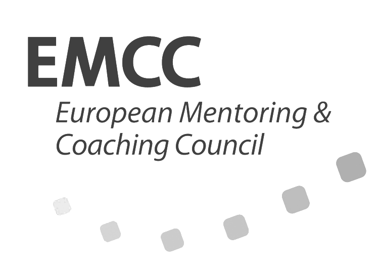

Katarina Heier
Jag tog examen som förskollärare julen -90 och har sedan dess arbetat med barn från 1-6 år. De första 15 åren arbetade jag i kommunal regi i Landskrona men 2007 bestämde jag och en väninna oss för att starta upp en privat förskola – Sandtrollets förskola AB. Förskolan ligger i ett naturreservat i Saxtorpsskogen strax utanför Landskrona.
Jag har tre vuxna barn födda -91, -93 och -01. Jag har även tre bonusbarn i ungefär samma ålder och några bonusbarnbarn. .
Med min bakgrund som förskollärare och egna barn, bonusbarn och bonusbarnbarn har jag stor och lång erfarenhet inom detta område. Jag vet att livet är motigt ibland både för oss som föräldrar men även för barnen. Jag vill tillsammans med er ta fram verktygen så att ni utvecklas som människor och har lättare att vägleda barnen i med- och motgång.
Att leda egna och andras barn är det roligaste och det mest givande jag vet. Det är också det mest prövande och energikrävande jag vet. När jag tänker på vad som är viktigast i samvaron med barn landar jag alltid i empati och tålamod. Har jag inte det blir det inte bra. Jag har gjort fler fel än jag kan räkna och det är viktigt för både föräldrar och pedagoger att förstå att ingen är perfekt men att vi ska alltid ska sträva efter att vara vårt bästa jag. Hur blir vi vårt bästa jag då? Genom kunskap om både sig själv och hur vi alla behöver stärka självkänslan, vågar ta personligt ansvar och lyssnar på vår integritet har våra förutsättningar att lyckas ökat betydligt. .
Under åren som förskollärare har jag genomgått föjande utbildningar: .
Reggio Emilia-pedagogik 15 p.
Diplomerad småbarnspedagog.
Ledarskapsutbildning 7 p.
Certifierad föräldra- & familjecoach via Familylab.
